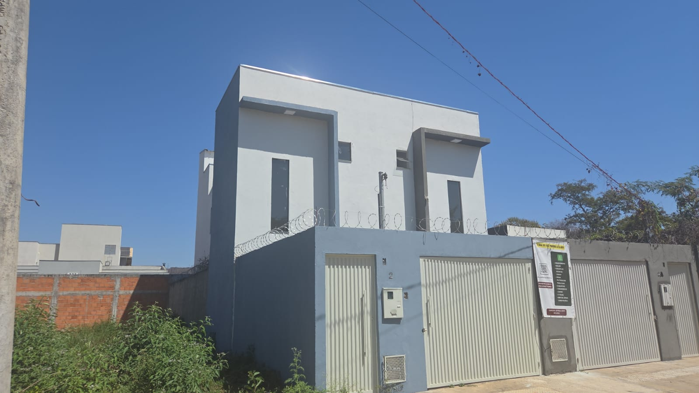

Aquecimento solar
Água quente nos chuveiros, nas pias dos banheiros e na pia da cozinha, sem chuveiro elétrico puxando energia.

Rua H, nº 2 · Reserva Real · Montes Claros/MG
Sobrado de 3 quartos com aquecimento solar, captação de água da chuva e água filtrada em todos os pontos. Acabamento pronto, nada para reformar.
Aquecimento solar
Água quente nos chuveiros, nas pias dos banheiros e na pia da cozinha, sem chuveiro elétrico puxando energia.
Água da chuva reaproveitada
Reservatório próprio que abastece a jardinagem e a lavanderia. A chuva de Montes Claros deixa de ir para o ralo.
Água filtrada em toda a casa
Filtragem central, não só na torneira da cozinha: banho, louça e roupa também saem com água tratada.
O imóvel
A casa fica na Rua H, num trecho de lotes amplos e casas novas do Reserva Real. São 98 m² construídos em dois pavimentos: embaixo, o hall de entrada com pé-direito duplo abre para o estar e a cozinha integrados; em cima, os três quartos e o banheiro social.
O piso é porcelanato 80×80 Calacata Silver, contínuo em toda a casa — sem soleira, sem troca de material entre ambientes. As esquadrias são de vidro blindex com perfil preto fosco, e a escada tem degraus no mesmo porcelanato com guarda-corpo metálico.
É construção nova, entregue limpa e sem uso. Não há nada a reformar antes de mudar.
Fotos
Fotos feitas na entrega da obra, sem mobília e sem tratamento. Clique para ampliar.
Tour em vídeo
Gravado à mão, na entrega. Dá para sentir o pé-direito e a circulação melhor do que na foto.
Sistemas da casa
Não são acessórios comprados depois. Sol, chuva e filtragem foram projetados junto com a hidráulica — por isso chegam a todos os pontos da casa.
Ficha técnica
Social e serviço
Íntimo
Localização
Rua H, nº 2
Loteamento Reserva Real
Montes Claros — MG
Loteamento planejado, de ruas asfaltadas e lotes amplos, vizinho aos bairros Morada do Sol e Morada da Serra e a poucos minutos do Parque Municipal. É um bairro em formação: casas novas, trânsito calmo e ainda com terrenos vazios em volta.
No entorno do loteamento:
Financiamento
Ajuste os valores e veja a estimativa na hora. Serve para ter uma ordem de grandeza antes de falar com o banco.
Estimativa aproximada, sem seguros obrigatórios (MIP e DFI), taxa de administração, correção da TR nem custos de cartório e ITBI. A taxa inicial de 11,5% a.a. é uma referência de mercado para linhas SBPE — o valor real depende do banco, do seu perfil de crédito e do uso do FGTS. Não é proposta de crédito.
Perguntas frequentes
Sim. A obra está concluída e entregue: piso, esquadrias, louças, metais, pintura e instalações prontos. As fotos e os vídeos foram feitos na entrega, sem mobília e sem tratamento de imagem.
Uma placa coletora no telhado aquece a água guardada em um reservatório térmico. Dela sai a água quente para os chuveiros, as pias dos banheiros e a pia da cozinha. Em dias nublados o sistema tem apoio elétrico, acionado só quando necessário — o que evita o consumo alto e constante do chuveiro elétrico.
Ela é captada pela calha do telhado e guardada em um reservatório separado da água potável. É usada na jardinagem e na lavanderia — usos que não exigem água tratada. É um sistema paralelo: não se mistura com a água de beber e de banho.
Não. O filtro fica na entrada da rede, antes da coluna que distribui a água pela casa. Todos os pontos recebem água filtrada: chuveiros, pias dos banheiros, cozinha e área de serviço.
Sim, o imóvel pode ser financiado, com uso do FGTS conforme as regras do banco e o seu enquadramento. A documentação é apresentada na visita. Use o simulador acima para ter uma ideia da parcela antes de procurar a agência.
Sim. O atendimento, a visita e a negociação são feitos diretamente, sem intermediário. Chame no WhatsApp que respondemos com o valor, as condições e os horários disponíveis para visita.
Dá. A visita é agendada conforme a sua disponibilidade, inclusive aos sábados e domingos. Mande uma mensagem com dois ou três horários que funcionem para você.
Contato
A visita leva uns vinte minutos e vale mais que qualquer foto. Mande uma mensagem com o horário que funciona para você.